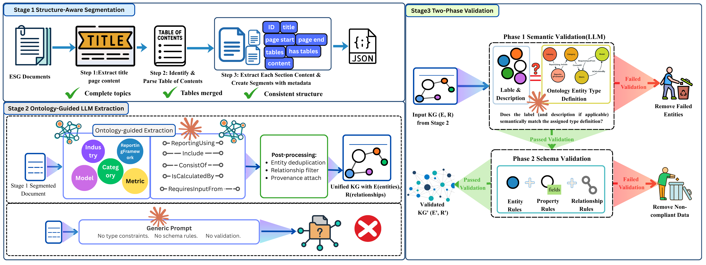

Framework Architecture
OntoMetric employs a three-stage pipeline that embeds the ESGMKG ontology into both extraction and validation processes. The framework processes regulatory documents (SASB, IFRS S2, TCFD, AASB S2) to generate validated knowledge graphs with full provenance tracking.
Quantitative Results
| Metric | Ontology-Guided | Baseline | Improvement |
|---|---|---|---|
| Semantic Accuracy | 65-90% | 3.4% | +61.6% to +86.6% |
| Schema Compliance | 80-83% | 30% | +50% to +53% |
| Relationship Retention | 63-90% | 0% | +63% to +90% |
| Cost per Entity | $0.0155 | $0.747 | 48× reduction |
| Cost Waste Ratio | 18.8% | 97.2% | -78.4% |
Evaluation Results
Figure 1: Method Comparison
Cost efficiency comparison showing 48× cost reduction ($0.747 → $0.0155 per entity) and dramatic decrease in waste ratio (97.23% → 18.80%).

Figure 2: Per-Document Performance
Cost per entity and waste ratio across five regulatory frameworks, demonstrating consistent efficiency across diverse document structures.

Figure 3: Entity Distribution Comparison
2×2 comparison of entity type distribution: Baseline (23→6 entities) vs Ontology-Guided (364→295 entities) across extraction and validation stages.

Quality Metrics: Baseline vs Ontology-Guided
Comprehensive side-by-side comparison across all three quality metrics, highlighting consistent superiority of the ontology-guided approach.

Evaluation Documents
| Document | Entities Extracted | Entities Validated | Retention Rate |
|---|---|---|---|
| SASB Commercial Banks | 53 | 42 | 79.25% |
| SASB Semiconductors | 69 | 62 | 89.86% |
| IFRS S2 | 80 | 68 | 85.00% |
| Australia AASB S2 | 74 | 66 | 89.19% |
| TCFD Report | 88 | 57 | 64.77% |
| TOTAL | 364 | 295 | 81.04% |